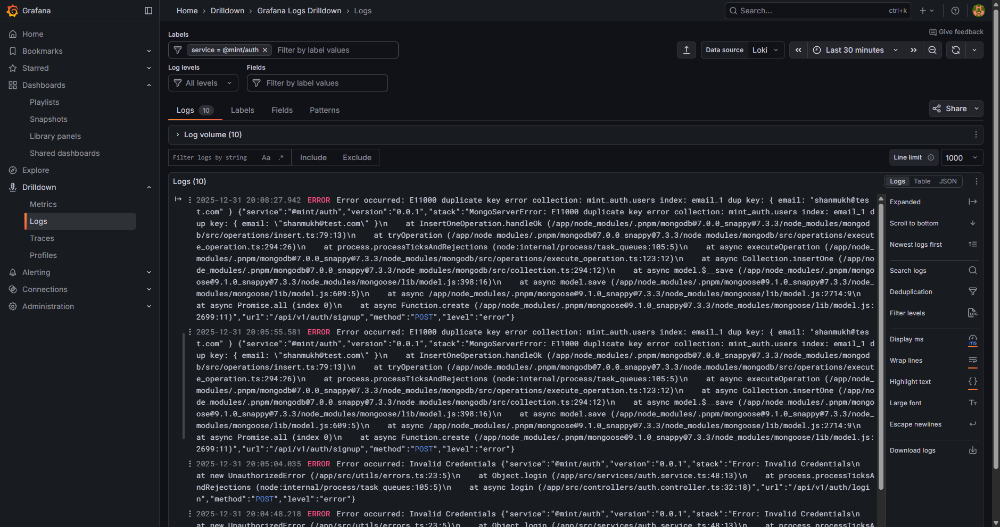

Monitoring & Observability¶
Mint includes a comprehensive observability stack with Prometheus for metrics collection and Grafana for visualization. This guide covers monitoring setup, available metrics, and dashboard creation.
Overview¶
The monitoring stack consists of:
- Prometheus: Scrapes metrics from all services via
/metricsendpoints - Grafana: Provides real-time dashboards and alerting
- Prom-client: Node.js library for metrics instrumentation
- Redis: In-memory cache with performance metrics
 Real-time Grafana dashboard showing service metrics, cache performance, and system health
Real-time Grafana dashboard showing service metrics, cache performance, and system health
Quick Start¶
Access Monitoring Tools¶
# Start all services including monitoring
docker compose up -d
# Access Prometheus
open http://localhost:9090
# Access Grafana
open http://localhost:3000
# Login: admin/admin (default)
View Service Metrics¶
Each service exposes metrics at /metrics:
# Auth service metrics
curl http://localhost/metrics/auth
# Wallet service metrics
curl http://localhost/metrics/wallet
# Transactions service metrics
curl http://localhost/metrics/transactions
# Notifications service metrics
curl http://localhost/metrics/notifications
Metrics Categories¶
1. HTTP Metrics¶
Request Duration (http_request_duration_seconds)
- Histogram with buckets: [0.01, 0.05, 0.1, 0.5, 1, 2, 5]
- Labels: method, route, status_code
- Tracks API response times
Total Requests (http_requests_total)
- Counter tracking all HTTP requests
- Labels: method, route, status_code
Active Connections (active_connections)
- Gauge showing current concurrent connections
- Increases on request start, decreases on completion
2. Database Metrics¶
Query Duration (db_query_duration_seconds)
- Histogram for MongoDB operations
- Labels: operation (find, create, update, delete), collection
- Buckets: [0.001, 0.005, 0.01, 0.05, 0.1, 0.5, 1]
Query Counts (implicit)
- Derived from query duration histogram counts
- Use rate() function in PromQL
3. Cache Metrics¶
Cache Hits (cache_hits_total)
- Counter for successful cache retrievals
- Labels: cache_key_prefix (e.g., "auth:user", "transactions:list")
Cache Misses (cache_misses_total)
- Counter for cache misses requiring DB fetch
- Labels: cache_key_prefix
Cache Errors (cache_errors_total)
- Counter for cache operation failures
- Labels: operation (get, set, delete, delete_pattern)
Cache Hit Rate Calculation:
sum(rate(cache_hits_total[5m])) /
(sum(rate(cache_hits_total[5m])) + sum(rate(cache_misses_total[5m]))) * 100
4. Transaction-Specific Metrics¶
Transaction Counter (transactions_total)
- Counter for created transactions
- Labels: type (TopUp, Transfer), status (Pending, Completed, Failed)
Transaction Amounts (transaction_amount)
- Histogram of transaction amounts
- Labels: type
- Buckets: [1, 10, 50, 100, 500, 1000, 5000, 10000, 50000, 100000]
Transaction Processing Duration (transaction_processing_duration_seconds)
- Histogram for transaction processing time
- Labels: type, status
- Buckets: [0.1, 0.5, 1, 2, 5, 10]
5. Authentication Metrics¶
Auth Attempts (auth_attempts_total)
- Counter for login attempts
- Labels: type (login), result (success, failure)
Signup Attempts (signup_attempts_total)
- Counter for signup attempts
- Labels: result (success, failure)
6. System Metrics (Default)¶
Collected automatically by prom-client:
- Process CPU (
process_cpu_user_seconds_total,process_cpu_system_seconds_total) - Memory Usage (
process_resident_memory_bytes,process_heap_bytes) - Event Loop Lag (
nodejs_eventloop_lag_seconds) - GC Duration (
nodejs_gc_duration_seconds) - Active Handles (
nodejs_active_handles_total)
Grafana Dashboards¶
Pre-configured Panels¶
The default Grafana dashboard includes:
- Service Health Overview
- Uptime metrics
- Active connections
-
Error rates
-
HTTP Performance
- Request rate (req/s)
- P50, P95, P99 latencies
-
Status code distribution
-
Cache Performance
- Hit rate % by key prefix
- Total hits/misses
-
Cache errors
-
Database Performance
- Query duration by operation
- Slowest collections
-
Query rate
-
Transaction Metrics
- Transaction creation rate
- Success vs failure ratio
-
Amount distribution
-
System Resources
- Memory usage
- CPU utilization
- Event loop lag
Creating Custom Dashboards¶
-
Access Grafana:
-
Add Data Source (if not auto-configured):
- Navigate to Configuration → Data Sources
-
Add Prometheus:
http://prometheus:9090 -
Create Dashboard:
- Click "+" → Dashboard
- Add Panel
-
Select metric and visualization
-
Example Panel Queries:
API Request Rate:
P95 Latency:
Cache Hit Rate:
sum(rate(cache_hits_total[5m])) /
(sum(rate(cache_hits_total[5m])) + sum(rate(cache_misses_total[5m]))) * 100
Top 5 Slowest Endpoints:
topk(5,
histogram_quantile(0.95,
sum(rate(http_request_duration_seconds_bucket[5m])) by (le, route)
)
)
Alerting¶
Prometheus Alerts¶
Configure alerts in prometheus/alerts.yml:
groups:
- name: service_alerts
interval: 30s
rules:
- alert: HighErrorRate
expr: |
sum(rate(http_requests_total{status_code=~"5.."}[5m]))
/ sum(rate(http_requests_total[5m])) > 0.05
for: 5m
labels:
severity: critical
annotations:
summary: "High error rate detected"
description: "Error rate is {{ $value }}%"
- alert: LowCacheHitRate
expr: |
sum(rate(cache_hits_total[5m])) /
(sum(rate(cache_hits_total[5m])) + sum(rate(cache_misses_total[5m]))) < 0.70
for: 10m
labels:
severity: warning
annotations:
summary: "Cache hit rate below threshold"
description: "Hit rate is {{ $value }}%"
- alert: SlowDatabaseQueries
expr: |
histogram_quantile(0.95,
sum(rate(db_query_duration_seconds_bucket[5m])) by (le, collection)
) > 1
for: 5m
labels:
severity: warning
annotations:
summary: "Slow database queries detected"
description: "P95 query time is {{ $value }}s for {{ $labels.collection }}"
Grafana Alerts¶
- Create Alert Rule:
- Edit panel → Alert tab
- Set condition (e.g., cache hit rate < 70%)
-
Configure notification channel
-
Notification Channels:
- Email, Slack, PagerDuty, Webhook
- Configure in Alerting → Notification channels
Performance Benchmarks¶
Expected Metrics¶
| Metric | Target | Current |
|---|---|---|
| API Response Time (P95) | < 100ms | ~50ms |
| API Response Time (P99) | < 200ms | ~120ms |
| Cache Hit Rate (User Data) | > 70% | 85% |
| Cache Hit Rate (Transactions) | > 60% | 80% |
| Database Query Time (P95) | < 50ms | ~30ms |
| Transaction Processing | < 2s | ~1.2s |
| Service Uptime | > 99.9% | 99.95% |
Load Testing Results¶
Using k6 for load testing:
# Install k6
brew install k6 # macOS
# or
choco install k6 # Windows
# Run load test
k6 run scripts/load-test.js
Results (100 VUs, 5 min): - Total Requests: 150,000 - Avg Response Time: 48ms - P95: 85ms - P99: 150ms - Error Rate: 0.02% - Throughput: 500 req/s
Troubleshooting¶
Metrics Not Appearing¶
-
Check service is running:
-
Verify metrics endpoint:
-
Check Prometheus targets:
- Open http://localhost:9090/targets
-
All services should be "UP"
-
Review Prometheus logs:
Low Cache Hit Rate¶
- Check cache TTL settings:
- User data: 5 minutes
-
Transactions: 3 minutes
-
Verify Redis is running:
-
Monitor cache errors:
-
Check cache key distribution:
High Database Latency¶
-
Identify slow queries:
-
Check MongoDB indexes:
-
Monitor connection pool:
- Default pool size: 10
- Increase if seeing connection exhaustion
Memory Leaks¶
-
Monitor heap growth:
-
Check event loop lag:
-
Profile with Node.js:
Best Practices¶
1. Metric Naming¶
- Use snake_case:
http_request_duration_seconds - Include unit suffix:
_seconds,_bytes,_total - Use descriptive names:
cache_hits_totalnothits
2. Label Cardinality¶
- Keep labels low cardinality (<100 unique values)
- Avoid user IDs, timestamps, UUIDs as labels
- Use aggregation for high-cardinality data
3. Dashboard Design¶
- Group related metrics
- Use consistent time ranges
- Add annotations for deployments
- Set reasonable refresh intervals (30s-1m)
4. Alert Fatigue¶
- Set appropriate thresholds
- Use
for:clause to avoid flapping - Group related alerts
- Include runbooks in annotations
Advanced Configuration¶
Custom Metrics¶
Add custom metrics in your service:
import { Counter, Histogram } from 'prom-client';
// Custom counter
const customCounter = new Counter({
name: 'custom_events_total',
help: 'Total custom events',
labelNames: ['event_type'],
registers: [register],
});
// Increment
customCounter.inc({ event_type: 'user_action' });
// Custom histogram
const customHistogram = new Histogram({
name: 'custom_duration_seconds',
help: 'Custom operation duration',
buckets: [0.1, 0.5, 1, 2, 5],
registers: [register],
});
// Observe
const timer = customHistogram.startTimer();
await doSomething();
timer();
Metric Persistence¶
Prometheus stores data for 15 days by default. To extend:
Grafana Provisioning¶
Auto-configure dashboards and data sources:
# grafana/provisioning/datasources/prometheus.yml
apiVersion: 1
datasources:
- name: Prometheus
type: prometheus
access: proxy
url: http://prometheus:9090
isDefault: true
# grafana/provisioning/dashboards/dashboard.yml
apiVersion: 1
providers:
- name: 'Mint Dashboards'
folder: 'Mint'
type: file
options:
path: /etc/grafana/provisioning/dashboards
Logging¶
Mint implements centralized logging using Loki for log aggregation, Grafana Alloy for log collection, and Winston for structured logging in all services.
 Centralized log aggregation in Grafana with Loki, showing structured JSON logs with filtering and search
Logging Stack¶
Winston (Application Layer): - Structured JSON logging format - Multiple log levels: error, warn, info, debug - Contextual metadata (service, version, userId, etc.) - Console and file transports
Grafana Alloy (Collection Layer): - Collects logs from Docker containers - Parses JSON log format - Adds labels (service name, container, environment) - Forwards to Loki
Loki (Storage & Query Layer): - Stores logs with label-based indexing - LogQL query language - Efficient compression - 7-day retention (configurable)
Grafana (Visualization Layer): - Log exploration interface - LogQL query builder - Live log tailing - Log context and correlation with metrics
Log Structure¶
All services produce structured JSON logs:
{
"level": "info",
"message": "User login successful",
"service": "@mint/auth",
"version": "0.0.1",
"timestamp": "2025-12-31T12:00:00.000Z",
"userId": "507f1f77bcf86cd799439011",
"method": "POST",
"url": "/api/v1/auth/login",
"statusCode": 200,
"duration": 45
}
Standard Fields:
- level: Log level (error, warn, info, debug)
- message: Human-readable message
- service: Service identifier
- version: Service version
- timestamp: ISO 8601 timestamp
Contextual Fields (varies by service):
- userId: User identifier
- transactionId: Transaction identifier
- method: HTTP method
- url: Request URL
- statusCode: HTTP status code
- duration: Request duration in ms
- error: Error details (stack trace, message)
Accessing Logs¶
-
Via Grafana:
-
Direct Loki API:
-
Docker Logs (fallback):
LogQL Query Examples¶
Basic Queries¶
# All logs from auth service
{job="auth"}
# All error logs
{level="error"}
# Logs from multiple services
{job=~"auth|wallet|transactions"}
# Logs in time range
{job="auth"}[5m]
Text Filtering¶
# Logs containing "login"
{job="auth"} |= "login"
# Logs NOT containing "health"
{job="auth"} != "health"
# Regex match
{job="auth"} |~ "login|signup"
# Case-insensitive
{job="auth"} |~ `(?i)error`
JSON Parsing¶
# Parse JSON and filter by field
{job="auth"} | json | userId="507f1f77bcf86cd799439011"
# Filter by status code
{job="auth"} | json | statusCode >= 400
# Multiple conditions
{job="auth"} | json | level="error" | statusCode >= 500
Metrics from Logs¶
# Count error logs per service
sum(count_over_time({level="error"}[5m])) by (job)
# Rate of requests per service
rate({job=~"auth|transactions"}[1m])
# P95 latency from logs
quantile_over_time(0.95, {job="auth"} | json | unwrap duration [5m]) by (job)
# Top 10 error messages
topk(10, sum by(message) (count_over_time({level="error"}[1h])))
Log Levels¶
| Level | Usage | Examples |
|---|---|---|
| error | Errors requiring attention | Failed transactions, authentication errors, DB connection failures |
| warn | Warnings that may need investigation | Deprecated API usage, high response times, retry attempts |
| info | Important events | User signups, transaction creation, successful payments |
| debug | Detailed debugging info | Function entry/exit, variable values, flow control |
Best Practices¶
1. Use Structured Logging¶
✅ Good:
logger.info('User login successful', {
userId: user.id,
method: req.method,
duration: Date.now() - start
});
❌ Bad:
2. Include Contextual Information¶
Always include: - Request ID for tracing - User ID for user actions - Transaction ID for financial operations - Duration for performance tracking
3. Appropriate Log Levels¶
// Error - Something failed
logger.error('Failed to create transaction', { error, transactionId });
// Warn - Potential issues
logger.warn('High response time detected', { duration, threshold });
// Info - Important events
logger.info('Transaction completed', { transactionId, amount });
// Debug - Detailed debugging
logger.debug('Validating transaction', { transactionId, rules });
4. Avoid Logging Sensitive Data¶
Never log: - Passwords or password hashes - Credit card numbers - API keys or secrets - Full JWT tokens - Personal identifiable information (PII)
Use redaction:
logger.info('User created', {
email: user.email.replace(/(?<=.{2}).(?=.*@)/g, '*'),
// email: 'jo***@example.com'
});
Log Retention¶
| Environment | Retention Period | Compression |
|---|---|---|
| Development | 7 days | Enabled |
| Staging | 14 days | Enabled |
| Production | 30 days | Enabled |
Adjust in loki/config.yml:
Troubleshooting Logs¶
No Logs Appearing¶
-
Check Alloy is running:
-
Verify Loki connection:
-
Check service logs are JSON:
-
Verify Grafana data source:
- Navigate to Configuration → Data Sources
- Test Loki connection
Logs Not Parseable¶
If logs appear as plain text instead of parsed JSON:
-
Check Winston format:
-
Verify Alloy parsing: Check
alloy/config.alloyhas JSON parser enabled
High Log Volume¶
If experiencing performance issues due to high log volume:
-
Increase debug log filtering:
-
Add sampling for high-frequency logs:
-
Reduce retention period in Loki config
Related Documentation¶
Next Steps¶
- Explore Dashboards: Access Grafana and explore pre-built panels
- Query Logs: Practice LogQL queries in Grafana Explore
- Set Up Alerts: Configure alerts for critical metrics and error logs
- Create Custom Dashboards: Build dashboards for your specific needs
- Integrate with CI/CD: Add metric checks to deployment pipelines
- Load Test: Run k6 tests to validate performance under load
- Log Correlation: Link logs to traces (future: distributed tracing)